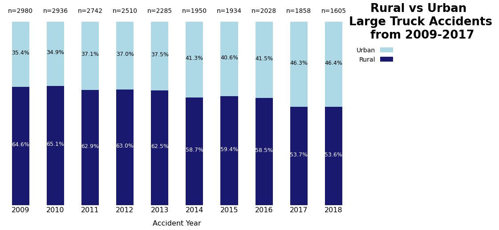
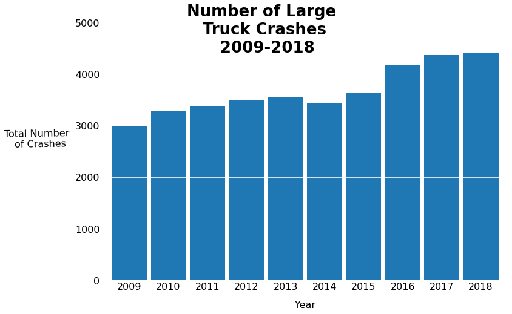
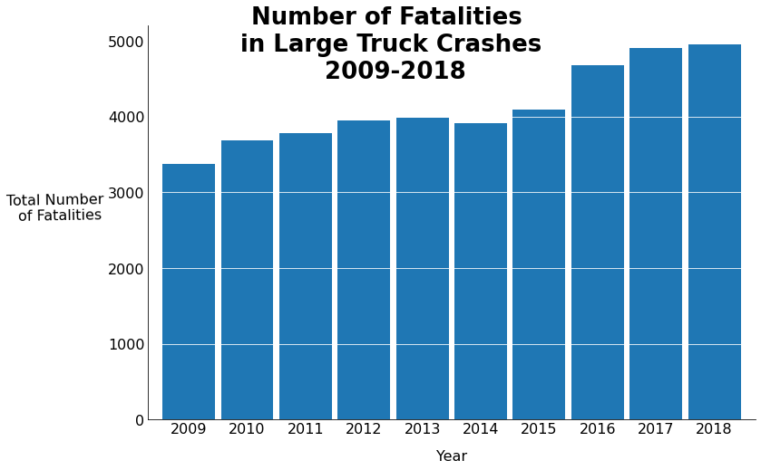

This page is dedicated to the exploration of trends found within large truck crashes from 2009 to 2018. Large truck crashes during these years resulted in a total of 25,757 fatalities with even more being injured2. Looking at the different aspects of these accidents and overall trends can indicate areas that can be improved on to help prevent future large truck crashes and save lives. This analysis and exploration are done using a data set that was given by the Institute for Safer Trucking (IST)1. IST is a nonprofit organization committed to fostering collaboration between trucking industry stakeholders to provide the public with an understanding of truck safety issues and the data-driven solutions that can address them. The data set itself contains information from different police accident reports filed for large truck crashes from 2009-2018. IST accessed and filtered this data from the Fatality Analysis Reporting System (FARS) using the final file from 2009-2018 and the 2019 Annual Report File (ARF). FARS is a nationwide census providing NHTSA, Congress and the American public yearly data regarding fatal injuries suffered in motor vehicle traffic crashes that is operated under NHTSA – National Highway Traffic Safety Administration2. As stated above the data set has been filtered to only include accidents where at least one large truck is involved. A large truck is defined as any medium or heavy truck, excluding buses and motor homes, with a gross vehicle weight rating (GVWR) greater than 10,000 pounds included commercial and non-commercial vehicles3. It should be noted that in March, 2019 NCSA identified issues with the classification of some large trucks as light pickup truck body types in FARS3. This misclassification resulted in an understatement of large truck crashes through the years and thus, an inaccurate assessment of the change in large truck crashes from year to year.
In the rest of this page, different visualizations will display the different components of these large truck crashes (the location, the number of crashes, the number of fatalities, and the speed limit) in various ways to help identify trends that can indicate areas for improvements that can help save lives and prevents large truck crashes.
The first figure is an embedded tableau dashboard that displays the location of all large truck accidents across the United States for a specific year from 2009-2018. This dashboard defaults to showing data for 2018, but by either using the arrows or the drop-down menu, one is able to navigate through all the other years. This visualization is a powerful conveyor of trends in large trucking accidents due to it being able to convey the geographical elements in relation to the number of deaths, the location type, and the speed limit at the site of the accident. The size of each marker is relative to the number of fatalities in that particular accident while the color indicates if that location was urban or rural. There is also a bar indicating the percentage of accidents that were in urban locations compared to rural ones. There is a negligible number of accidents that were unable to be classified as urban or rural and as such, they were filtered out. To look at how the percentage of large truck accidents in urban compared to rural areas more in depth, please refer to the next section. In addition to the markers themselves, this visualization also depicted the relative percent of fatalities that occurred in accidents at various speed limits. There is a clear trend that can be seen when looking at this as from 2009-2018, accidents in areas with a 55-60 mph speed limit are responsible for the highest relative percentage of deaths followed by 65-75 mph speed limits. This is an indication of where further research can be done to create a solution to this problem. Such solutions could be automatic breaking, speed limiters, and many others1.

As mentioned earlier, the visualization above gives another look at the trend of large trucking accidents occurring in rural vs urban locations. It does so by showing the relative percentages for each year next to each other with the number of total accidents on top of each bar. As a reminder a negligible number of accidents were filtered out for this visualization as their locations were not designated as either rural or urban. A trend can be seen from 2009 to 2018 in this depiction, as you can see over the years the relative percentage of accidents occurring in urban locations is increasing relative to rural locations. Researching into why there has been an increase in accidents in urban locations can help identify solutions for how to mitigate this increase. As a counter argument could be made that the reason the relative number of urban accidents are going up is the number of rural accidents decreasing, the total number of accidents was included to show the overall trend of large truck accidents.

The overall trends of large truck accidents, the number of fatalities and the number of accidents per year, can be seen in the two visualizations above. These figures show that unfortunately both the number of large truck crashes and the number of fatalities due to these accidents have been increased at a steady rate from 2009, with the only decrease from year to year being in 2014. The biggest increase from year to year in both the number of accidents and fatalities occurred from 2015 to 2016. These increasing trends reinforce the importance of finding the trends behind these trucking accidents to find solutions that can prevent future large truck crashes, save lives, and reverse the current trend.
Raising awareness of large truck accidents and how many people are affected by them is critical to pushing for research and action on topics that can make roads safer and safe lives. The Institute for Safer Trucking (IST) is one of many organizations working to improve truck safety should you be interested in learning more about the topic.
Author: Katherine Lannen Last edited: 2021-05-12
The Institute for Safer Trucking (IST) https://www.safertrucking.org/↩︎
NHTSA FARS FTP Access (Raw NHTSA FARS Data). Online: https://www.nhtsa.gov/nhtsa-ftp↩︎
National Center for Statistics and Analysis. (2021, February (Revised)). Fatality Analysis Reporting System (FARS) analytical user’s manual, 1975-2019 (Report No. DOT HS 813 023). National Highway Traffic Safety Administration. Online: https://crashstats.nhtsa.dot.gov/Api/Public/ViewPublication/813023↩︎